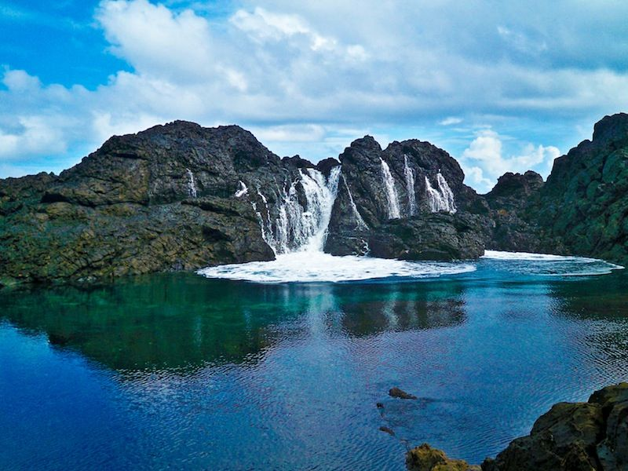
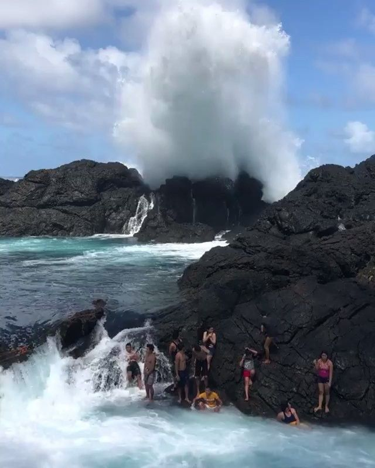
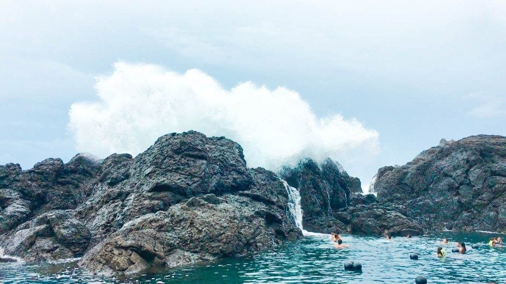
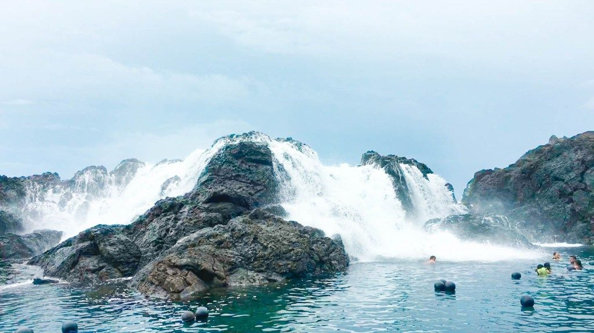

Laswitan Lagoon is a coastal attraction known for its unique combination of rocky formations and natural pools formed by ocean waves. The site features a rugged shoreline where waves from the Pacific Ocean crash against rocks, creating dramatic splashes. During low tide, calm pools emerge, allowing visitors to swim safely in clear water. The contrast between calm lagoons and powerful waves makes the area visually striking. The natural rock formations add texture and character to the landscape.
The lagoon’s environment offers a mix of tranquility and excitement, depending on the tide. The surrounding coastline provides scenic views of the ocean and sky. The sound of waves crashing against rocks creates a dynamic and lively atmosphere. The area remains relatively untouched, preserving its natural charm. Visitors often appreciate the balance between relaxation and adventure. Overall, Laswitan Lagoon presents a unique coastal experience.


Laswitan Lagoon was once a quiet coastal area primarily used by local fishermen. It remained relatively unknown until visitors began discovering its natural pools and scenic rock formations. Over time, word spread about its unique features, attracting more tourists. The site gradually developed into a recognized tourist destination in Surigao del Sur. Despite this growth, it has retained much of its natural condition.
Local communities have played a role in maintaining and promoting the lagoon. Efforts have been made to preserve the environment while accommodating visitors. The lagoon’s transformation into a tourist spot reflects the growing interest in eco-tourism. Minimal development has helped maintain its authenticity. Today, it continues to attract visitors seeking a different kind of coastal adventure. Its history highlights the importance of community involvement in tourism.
Laswitan Lagoon offers basic amenities that support tourism while preserving its natural setting. Simple cottages are available for visitors who wish to rest or have picnics. Open spaces provide areas for relaxation and social gatherings. Restroom facilities are limited but available for convenience. The site remains minimally developed to maintain its natural appeal.
Activities at the lagoon are centered around its natural features. Swimming in the natural pools is popular during low tide when the water is calm. Visitors can also enjoy watching waves crash against rocks during high tide. Photography is a favorite activity due to the dramatic scenery. Walking along the coastline allows for exploration of the area. These activities provide a mix of relaxation and excitement.


Tourists visiting Laswitan Lagoon can engage in activities that highlight its coastal environment. Swimming in the natural pools offers a safe and refreshing experience during low tide. Watching the powerful waves during high tide provides an exciting spectacle. Photography opportunities are abundant due to the unique landscape. Visitors often enjoy simply relaxing by the shore.
Group activities such as picnics are common at the site. The open space allows families and friends to gather comfortably. Some visitors explore nearby areas to enhance their trip. The combination of calm and dynamic elements makes the experience unique. Local residents sometimes share insights about the area. Overall, the lagoon offers a memorable coastal adventure.
Laswitan Lagoon is accessible through the municipality of Cortes in Surigao del Sur. Travelers can reach Cortes by bus or private vehicle from nearby cities. From the town proper, local transportation such as motorcycles or tricycles can be used.
Local transport options make it easy to reach the site. Motorcycle taxis are commonly used due to their accessibility. Private vehicles provide a more comfortable option for groups. The journey offers scenic coastal views along the way. Despite its natural setting, the lagoon is accessible to most travelers. This makes it a convenient destination for day trips.